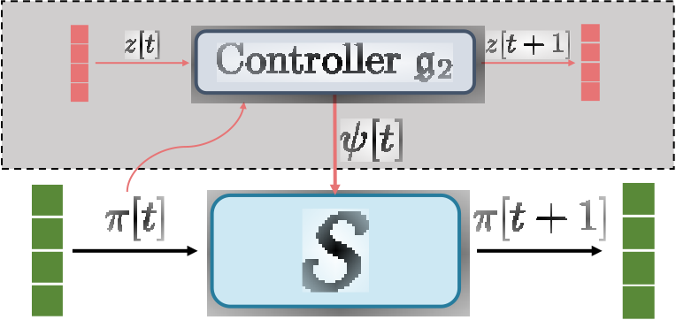

| Samuele Zoboli | Steeven Janny | Mattia Giaccagli |
 |
| Steeven Janny | Identification and Simulation of Physical Systems | February 13th, 2024 |
Task definition
Output prediction
We consider a system of the following form: $$ \begin{array}{ll} \dot x &= f(x) + g(x)u \\ e &= h(x) - r(t) \end{array}$$ Assumptions:
- $f$, $g$, $h$, $r$ sufficiently smooth.
- Forward completeness in compact $\mathcal{F}$.
- Asymptotic output tracking if $c = 0$
- Approximate output tracking if $c\neq 0$
Task definition
Related work
- Model inversion
- Strongly model dependent
- Regulation Theory
| 1) Steady-state generator: $\boxed{r \mapsto \pi, v} \text{ s.t. }\left\{\begin{array}{cl} \dot\pi &= f(\pi, v)\\r(t)&=h(\pi)\end{array}\right. $ |
|
| 2) Stabilizer: $\boxed{u = \psi(x, \pi, v)}\text{ s.t. } \lim_{t\mapsto\infty} \|x - \pi\| = 0$ |
- Optimization
- Computational effort (online)
Task definition
Proposed approach
Step 1: Regulator Equations
Given a reference signal $r(t)$, find $\big(\textcolor{#598938}{\pi_r}(t), \textcolor{#598938}{\psi_r}(t)\big)$ such that:
$$\left\{\begin{array}{cl}\dot{\textcolor{#598938}{\pi_r}} &= f(\textcolor{#598938}{\pi_r}) + g(\textcolor{#598938}{\pi_r}) \textcolor{#598938}{\psi_r} \\ 0 &= h(\textcolor{#598938}{\pi_r}) - \textcolor{#277C9D}{r} \end{array}\right.$$
Step 2: Stabilizer
Find $\textcolor{#598938}{\alpha}(x, \pi, t)$ such that:
$$\left\{\begin{array}{l} \textcolor{#598938}{u}(r,x,t) = \textcolor{#598938}{\psi_r}(t) + \textcolor{#598938}{\alpha}(x, \textcolor{#598938}{\pi_r}, t) \\ \lim_{t\mapsto \infty} \|X\big(x(0), u, t\big) - \Pi_r\big(\pi_r(0), \psi_r, t\big)\| = 0\end{array}\right.$$
Theoretical results
Controller design
Assumptions:
$ \textbf{1. }\exists \textcolor{#598938}{P}(x,t)>0\text{ a }C^1\text{ matrix-valued function s.t. }\; L_\varphi \textcolor{#598938}{P} - \rho\textcolor{#598938}{P}gg^\top\textcolor{#598938}{P} \preceq -\epsilon\textcolor{#598938}{P} $
$ \textbf{2. }\exists \textcolor{#598938}{\beta}\text{ a }C^2 \text{ function s.t. }\quad \frac{\partial \textcolor{#598938}{\beta}^\top}{\partial x} = \textcolor{#598938}{P}g $
$ \textbf{3.}\text{ The Killing property holds } \quad L_g \textcolor{#598938}{P} = 0 $
Theoretical results
Controller design
Guys, wtf ???

No, no, don't worry
Remember the assumptions ?
Just learn $\textcolor{#598938}{P}$ and $(\textcolor{#598938}{\pi}, \textcolor{#598938}{\beta})$. If we do, this theorem states that we can do output control
Ok, but we'll learn an approximation...
Yes, we know
Theoretical results
Controller design
And they knew.
Deep learning
Step 1: Solving the regulator equations
Step 1: Regulator Equations
Given a reference signal $r(t)$, find $\big(\textcolor{#598938}{\pi_r}(t), \textcolor{#598938}{\psi_r}(t)\big)$ such that:
$$\left\{\begin{array}{cl}\dot{\textcolor{#598938}{\pi_r}} &= f(\textcolor{#598938}{\pi_r}) + g(\textcolor{#598938}{\pi_r}) \textcolor{#598938}{\psi_r} \\ 0 &= h(\textcolor{#598938}{\pi_r}) - \textcolor{#277C9D}{r} \end{array}\right.$$
$ \left\{\begin{array}{cl} \textcolor{#E77475}{q[t+1]} &= \mathfrak{g}_1\big(\textcolor{#277C9D}{r[t]}, \textcolor{#E77475}{q[t]}\big) \\ \textcolor{#598938}{\pi[0]} &= \mathfrak{f}_1\big(\textcolor{#E77475}{q[T]}) \end{array}\right.$ |
|
$ \textcolor{#598938}{\psi[t+1]}, \textcolor{#E77475}{z[t+1]} = \mathfrak{g}_2\big(\textcolor{#598938}{\pi[t]},\textcolor{#277C9D}{r[t+1]}, \textcolor{#E77475}{z[t]} \big) $ |
 |
Deep learning
Step 1: Solving the regulator equations
$$\mathfrak{f}_1, \mathfrak{g}_1, \mathfrak{f}_2 = \arg \min \sum_{t=0}^T \Big| r(t) - h\big(\pi[t]\big)\Big|^2$$
Deep learning
Step 2: Stabilizer
Assumptions:
$
\textbf{1. }\exists \textcolor{#598938}{P}(x,t)>0\text{ a }C^1\text{ matrix-valued function s.t. }\;
L_\varphi \textcolor{#598938}{P} -
\rho\textcolor{#598938}{P}gg^\top\textcolor{#598938}{P} \preceq -\epsilon\textcolor{#598938}{P}
$
$
\textbf{2. }\exists \textcolor{#598938}{\beta}\text{ a }C^2 \text{ function s.t. }\quad
\frac{\partial \textcolor{#598938}{\beta}^\top}{\partial x} = \textcolor{#598938}{P}g
$
$
\textbf{3.}\text{ The Killing property holds } \quad L_g \textcolor{#598938}{P} = 0
$
|
$$ \begin{array}{c} \mathcal{L} = \lambda(\textcolor{#227C9D}{M_1}) + \lambda(\textcolor{#EC7677}{M_2}) + \lambda(\textcolor{#EC7677}{M_3}) + \lambda(\textcolor{#70AD47}{M_4}) \\ P(x, \psi) = \arg \min \mathcal{L}\end{array}$$ |
Results
Ball & Beam
$$\mathcal{S} : \begin{bmatrix}x_1\\x_2\\x_3\\x_4\end{bmatrix} = \begin{bmatrix} x_2\\B(x_1x_4^2 - g\sin x_3)\\x_4\\0\end{bmatrix}+\begin{bmatrix}0\\0\\0\\1\end{bmatrix}u$$
$$u(t) = \psi_r(t) + \kappa\big( \beta(x, t) - \beta(\pi_r, t)\big) $$
Conclusion
Limitations and Follow-up
- Sometimes it works !
- Theoretically capable of handling any system
- No online optimization
- Can also find approximate solution when no exact solution exists
- Sometimes it doesn't...
|
→ |
Constrained the controller to stay in a region of the state space ? |
- Derivative in the loss: difficult to train
|
→ |
Train P using local solution of the Ricatti equation ? |
Thank you !